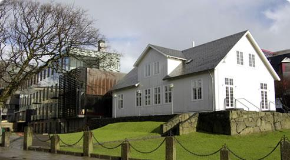
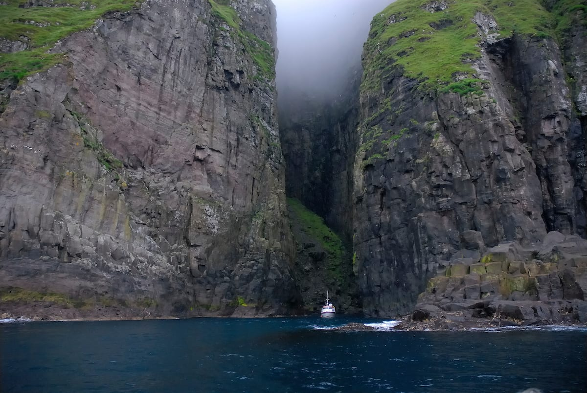
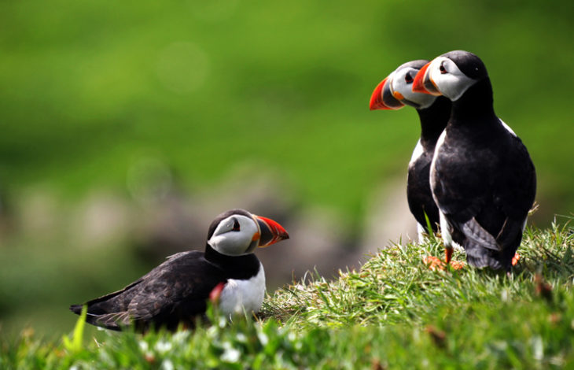
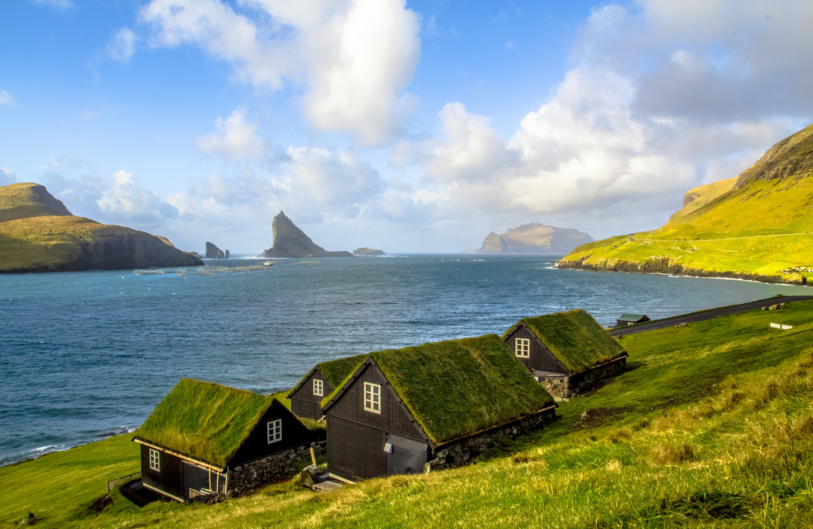

ISOLE FAROE

Forma di governo Divisione amministrativa autonoma danese
Superficie 1.396 Km²Popolazione 54.100 ab.
Densità 39 ab/Km²
Capitale Tórshavn
Moneta Corona faroese, Corona danese
Lingua Faroese, Danese (entrambe ufficiali)
Storia
Gli scavi archeologici effettuati sull’isola di Sandoy hanno dimostrato che le isole Faroe erano abitate già nel 300. Questi scavi però non rivelano nulla su chi fossero questi misteriosi abitanti. Le isole Faroe si pensa possano essere state colonizzate per la prima volta tra il VI e la metà del VII secolo da dei monaci irlandesi in cerca di un luogo pacifico e tranquillo.
Di questo però non si ha la certezza. Al contrario invece è ben documentata la colonizzazione norvegese iniziata circa 100 anni dopo e prolungata per tutta l’era vichinga. Alle isole Faroe i coloni vichinghi stabilirono il proprio parlamento, con tribunali locali situati in diverse aree delle isole. Il tribunale principale di Tinganes si trovava a Tórshavn, oggi la capitale delle isole. Il Faroese Althing, Løgting, è il parlamento più antico ancora in uso.
Le isole rimasero sotto il controllo norvegese per secoli, finchè non svilupparono una propria flotta e iniziarono le proprie attività, soprattutto riguardanti la pesca; L’industria crebbe fino a diventare la principale fonte di reddito per le isole.
Nel 1948 le Faroe ottennero l’indipendenza e istituirono la sede del proprio governo a Tinganes.

Turismo e Curiosità
Fino a un paio di anni fa le isole Faroe, per chissà quale strano motivo, non comparivano affatto sulle mappe di Google.
Così gli abitanti delle isole, infastiditi da questa inspiegabile mancanza, hanno chiesto a Google di inserire le Faroe su Google Street View, creando una loro simpatica campagna di mappatura delle isole. Per farlo, hanno utilizzato delle telecamere 360° alimentate ad energia solare e montate sul dorso di alcune pecore sparse in giro per le isole. La campagna si chiamava Sheep View.
Una delle leggende più famose delle isole Faroe è la leggenda di Kópakonan, che letteralmente significa la donna delle foche. Un tempo si credeva che le foche fossero esseri umani che cercavano volontariamente la morte nell’oceano. A questi, una volta all’anno durante la tredicesima notte, gli era permesso venire sulla terra, togliere la pelle e divertirsi come esseri umani. Altri miti sono legati all’esistenza di troll ed elfi.
Attrazioni
Escursioni
Escursioni in mare? Alle Isole Faroe c’è solo l’imbarazzo della scelta. Puoi noleggiare per uno o più giorni imbarcazioni con o senza skipper, goderti il paesaggio dal mare e poi attraccare per un trekking sulle scogliere. Prepara la tua macchina fotografica per immortalare il bellissimo lago di Leitisvatn/Sørvágsvatn e le cascate di Bøsdalafossur, immerse in una natura incontaminata, oppure organizza una gita all'isoletta disabitata di Lítla Dímun, un'esperienza unica a cui è possibile unirsi solo poche volte all'anno.

Bird Watching
Per gli amanti del bird watching questo luogo è l’ideale: sulla parte occidentale dell’arcipelago, soprattutto sull'isola di Mykines si può fare un’escursione lungo le imponenti scogliere, una passeggiata o un’uscita in barca per osservare da vicino migliaia di pulcinelle di mare, sule e molti altri uccelli marini. In primavera e in estate ci si può unire alle escursioni in giornata organizzate da guide locali esperte nell'area intorno a Tórshavn e Kirkjubø e sulle varie isolette.

Città
Benché sia una delle capitali più piccole al mondo, Torshavn è ricca di servizi: dagli hotel 4 stelle ai negozi di design, fino agli ottimi ristoranti di cucina a base di prodotti locali, senza contare la vivace scena musicale e la ricca offerta culturale come il museo Listaskalin, con mostre permanenti di arte faroese contemporanea. Alcune delle tipiche fattorie dal tetto in erba dell’arcipelago sono state riconvertite in musei che raccontano la vita di un tempo sulle isole: da notare il villaggio-museo di Blásastova a Gøta.

Trekking
La spiaggia di sabbia scura come il carbone si copre e scopre del manto azzurro dell’oceano proteggendo, il piccolo villaggio di Tjørnuvík. Dai vecchi sentieri tra i villaggi, al trekking in montagna con vista sull'oceano: in primavera e in estate ci si può unire alle escursioni in giornata organizzate da guide locali esperte e appassionate nell'area intorno a Tórshavn e Kirkjubø e sulle varie isolette.